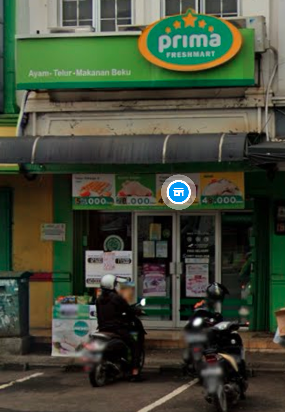

Retail
0xbe76433410ce32010c9270deae5e3d65
Pemasar: Prima Freshmart BSD
Lokasi: RUKO BOULEVARD BLOK BA NO. 37, BUMI SERPONG DAMAI, KEL. RAWA BUNTU, KEC. SERPONG, TANGERANG SELATAN
Tanggal: 6 Februari 2022
Harga: Rp 25.000
